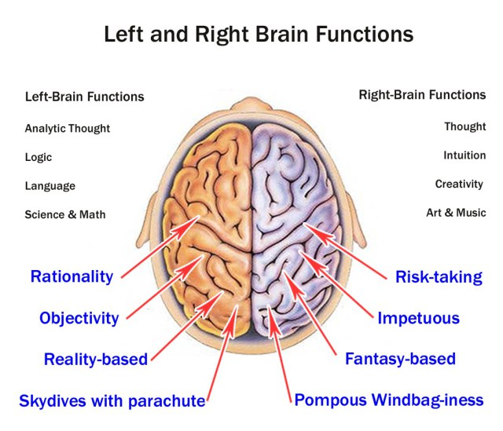
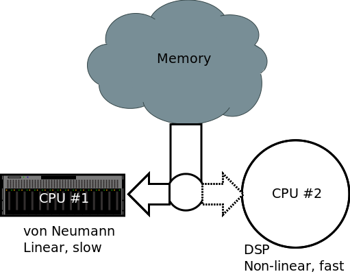
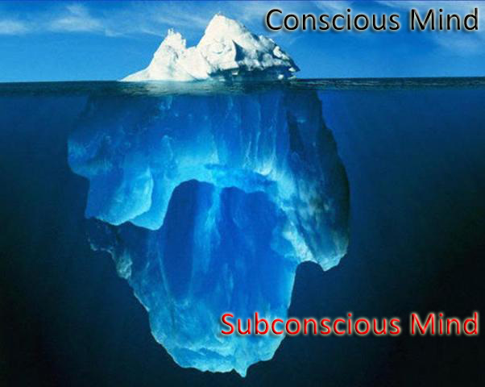

The Cultured Developer
Evolution of a software developer
Who am I?
Jørn Ølmheim, ITV Drilling Real-time Services
- Formerly of ITV DIS RD...
- More than 15 years experience
- Software craftsman
- Polyglot programmer
- Leading Advisor, Corporate IT
What is a cultured developer?
Knowledge


Attitude
- Pragmatic
- Open
- Dedicated
- Deliberate
A journey of experience
... both personal and professional
The Dreyfus model
of skill acquisition

How does your brain work?
The two halves of the brain
Wrong!
How your brain really works
Tap into your potential
Cognitive bias
- Anchoring
- Fundamental attribution error
- Self-serving bias
- Need for closure
- Confirmative bias
- Exposure effect
- Hawthorne effect
- False memory
- Symbolic reduction falacy
- Nominal falacy
- ...and many more
Hardware bugs
Don't be an angry monkey!
Bottom line:
Trust your instincts, but verify!
How do I become a cultured developer?
Sheep dip training doesn't work

Alien, toxic
and temporary
Continuous, deliberate process

Gain Experience

... and keep up to date!
Community of practice
Software Craftsmanship
is
Community of practice
for
software developers!
How can we do this in Statoil?
Example from DPN FC CEA